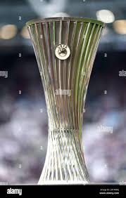
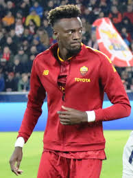
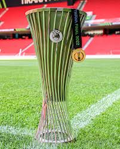

UEFA Europa Conference League este a treia competiție inter-cluburi din Europa, după Champions League și Europa League. Introdusă în 2021, competiția oferă mai multor echipe din ligi mai mici șansa de a juca în cupele europene.
Competiția începe cu trei runde preliminare și un play-off, urmate de faza grupelor (32 de echipe împărțite în 8 grupe). Primele două echipe din fiecare grupă avansează în faza eliminatorie (optimile, sferturile, semifinalele și finala), unde li se alătură echipele care au terminat pe locul 3 în grupele Europa League.

Printre cei mai remarcabili jucători care au excelat în Conference League se numără:

Conference League oferă echipelor din ligi mai mici o șansă reală de a câștiga un trofeu european. Câștigătorul se califică automat în Europa League pentru sezonul următor.

| An | Câștigător | Finalist | Scor | Stadion |
|---|---|---|---|---|
| 2023 | West Ham United | Fiorentina | 2-1 | Eden Arena, Praga |
| 2022 | Roma | Feyenoord | 1-0 | Arena Kombëtare, Tirana |